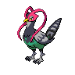

📖 英語版の図鑑説明
This Pokémon is intelligent and intensely proud. People will sit up and take notice if you become the Trainer of one.
日本語訳
賢く誇り高い性格。トレーナーが連れて歩けば周囲の注目を集めます。
📝 この図鑑文に出てくる英単語
| 英単語 | 意味 | 品詞 | レベル |
|---|---|---|---|
| intelligent | 頭のよい | 形容詞 | 高校 |
| intensely | 激しく | 副詞 | 大学 |
| proud | ほこりに思う | 形容詞 | 中3 |
| notice | 気づく | 動詞 | 中3 |
文法ポイント if 〜 は「もし〜ならば」という条件を表す接続詞です。
💡 英語名「Unfezant」の由来
英語名「Unfezant」は、pheasant（キジ）がもとになっていると考えられている。フランス語の名前は「Déflaisan」で、déplaisant（不快な）、faisan（キジ）から作られている。
出典 Bulbapedia
📊 ケンホロウの種族値
HP80
こうげき115
ぼうぎょ80
とくこう65
とくぼう55
すばやさ93
合計 488
❓ よくある質問
- ケンホロウの英語名は？
- ケンホロウの英語名は「Unfezant」です。
- ケンホロウの英語名「Unfezant」の由来は？
- 英語名「Unfezant」は、pheasant（キジ）がもとになっていると考えられている。フランス語の名前は「Déflaisan」で、déplaisant（不快な）、faisan（キジ）から作られている。
- ケンホロウは英語版の図鑑でどう説明されている？
- 「This Pokémon is intelligent and intensely proud. People will sit up and take notice if you become the Trainer of one.」と書かれています。日本語にすると「賢く誇り高い性格。トレーナーが連れて歩けば周囲の注目を集めます。」という意味です。
ケンホロウは第5世代（イッシュ地方）のポケモンです。第5世代（イッシュ地方）の英語名一覧 →